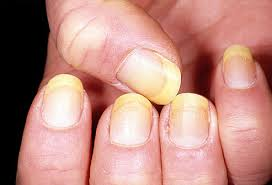

Nail Designs


~Keep fingernails clean and dry
~Use sharp manicure scissors or clippers
~Use lotion
~Ask your doctor if you can try biotin
~You can use nail polish but you must use acetone-free nail polish remover
~When working in the house you can wear gloves to keep nails clean
~Moisturize cuticles
~Trim nails oftenly
~Clean with a nail brush
~If you see infections in your nail tell your doctor
Having a touch of white, something rimpling, or bumps can be a sign of having a disease in your body. Liver and heart problems can show up in your nails.
Pale nails- can be a sign of serious illness: Anemia, congestive heart failure, liver disease or malnutrition.

White nails with darker rims- liver problems: Hepatitis.

Yellow nails- the cause for this is a fungal infection. In a rare case it can cause serious conditions such as thyroid disease, lung disease or diabetes.
Bluish nails- the body isnt getting enough oxygen and could indicate a lung or heart problem.

Rippled or pitted nails- can be an early sign of psoriasis or inflammatory arthritis.
Cracked or split nails- thyroid disease or a fungal infection.

Puffy nail fold- lupus or another connective tissue disorder.

Dark lines beneath the nail- caused by melanoma the most dangerous kind of skin cancer.

Gnawed nails- anxiety or an obsessive-compulsive disorder.
Here are some healthy at home diy's that you can get inspiration from.
Taking care of your skin helps your organs do its job better and longer. Healthy skin helps to defend you from things that would make you sick. It can prevent you from getting acne and bumpy skin. Listed below will be products along with the stores where you can buy them from.
ValJean Labs has a 4.5 star rating. They can be brought from Amazon, Urban Outfitters, Ebay, Etsy, Amazon and Marshalls. They range from $8.99 to $20 depending on where you go to buy. Cruelty free.
Soap and glory has a 5 star rating. They can be brought from Walgreen, Ultra Beauty, Amazon, Soap and Glory website and Target. Ranging from $10-$20. It is a skin care line.
Shea moisture has a 4 star rating. They can be brought from Ultra Beauty, Target, Bath & Body Works and Sally's. Ranging from $3-$30. Used for daily hydration, unclogs pores, heals and rejuvenates dry skin and moisturizes skin.
St. ives has a 4.5 star rating. It can be brought from Cvs, Walgreen, Walmart and Amazon. They range from up to $30. Their skin care products make skin clean, smooth, glowing and moisturized.
Bentonite clay has a 4.5 star rating. Can be purchased from Walmart and Amazon. Ranging from $8-$11. Their products heals and moisturizes skin.
Jergens has a 4.7 star rating. Can be purchased from Walgreen, Sephora, Walmart and The Body Shop. Ranging from up to $30. Their products provides all essential vitamins, your skin will look and feel smoother, healthier, and your skin will be protected from sun, wind and the cold.
African black soap has 4.5 star. Can be purchased from Ultra Beauty, Walgreen, Target, Walmart and Amazon. It is about $5.79. The product cleanses, hydrates, calms skin and balances oily skin.
Here are some videos you can get motivation from.